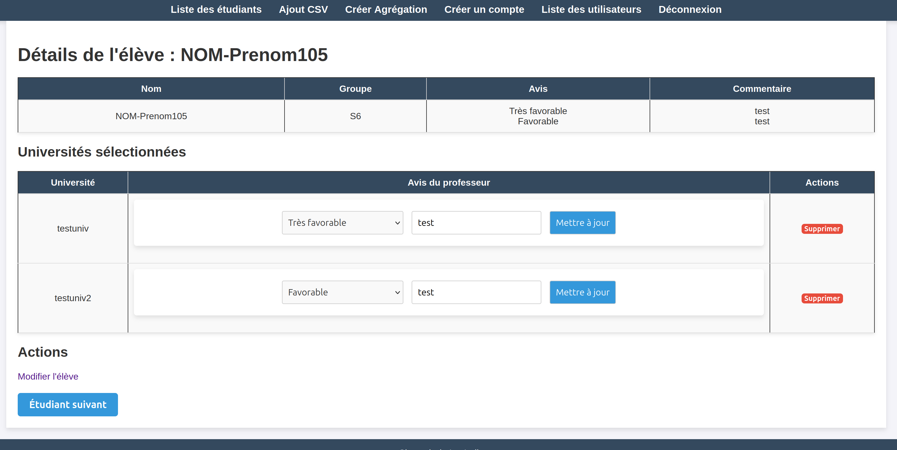

Contexte du projet:
Le projet SAE A3, réalisé au cours de la deuxième année du BUT Informatique, avait pour objectif de nous initier aux méthodes agiles en travaillant en équipe sur un projet informatique.

Le projet SAE A3, réalisé au cours de la deuxième année du BUT Informatique, avait pour objectif de nous initier aux méthodes agiles en travaillant en équipe sur un projet informatique.
Pendant un semestre, nous avons appliqué la méthodologie Scrum, avec des rôles définis tels que Scrum Master, Product Owner, et développeurs. Le projet consistait à développer un site web permettant de gérer les avis de poursuite d’étude des étudiants lors du jury de fin de formation.
En tant que Product Owner dans une équipe de 4, mon rôle principal était de recueillir les besoins du client à travers plusieurs entretiens. J’ai traduit ces besoins en user stories, priorisé les tâches dans un backlog Scrum et veillé à leur faisabilité technique en collaboration avec l’équipe de développement. Parallèlement, j’ai activement contribué au développement du site en utilisant PHP pour les fonctionnalités dynamiques et HTML/CSS pour l’interface utilisateur. Cette double responsabilité m’a permis de combiner la gestion organisationnelle et la participation technique au projet.